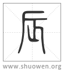

𠨷
古文辰[𨑃]。
宋代 徐鉉 徐鍇 注釋
臣鉉等曰：三月陽气成，艸木生上徹於土，故从匕。厂，非聲。疑亦象物之出。
徐鍇曰：“匕音化。乙，艸木萌初出曲卷也。”
清代 段玉裁《說文解字注》
- 震也。三月昜气動。靁電振。民農時也。物皆生。
震振古通用。振、奮也。律書曰。辰者、言萬物之蜄也。律曆志曰。振美於辰。釋名曰。辰、伸也。物皆伸舒而出也。季春之月。生氣方盛。陽氣發泄。句者畢出。萌者盡達。二月靁發聲。始電至。三月而大振動。豳風曰。四之日舉止。故曰民農時。
- 从乙匕。
匕呼跨切。變也。此合二字會意。乙象春艸木冤曲而出。陰氣尙強。其山乙乙。至是月陽氣大盛。乙乙難出者始變化矣。
- 匕象芒達。
匕字依韵會補。芒達、芒者盡達也。
- 厂聲。
鉉等疑厂呼旱切、非聲。按厂之古音不可攷。文䰟與元寒音轉亦冣近也。今植鄰切。古音在十三部。
- 辰、房星。天時也。
此將言从二。先說其故也。晶部曟字下曰。房星、爲民田時者。从晶、辰聲。或省作晨。此房星之字也。而此云辰、房星。辱下云。房星爲辰。田𠋫也。則字亦作辰。爾雅房心尾爲大辰是也。韋注周語曰。農祥、房星也。房星晨正、爲農事所瞻仰。故曰天時。引申之、凡時皆曰辰。釋訓云。不辰、不時也。房星高高在上。故从上。